20 October 2026
If the data show different variation at different levels of the series, then a transformation can be useful.
Denote original observations as \(y_1,\dots,y_n\) and transformed observations as \(w_1, \dots, w_n\).
Mathematical transformations for stabilising variation
\[\begin{array}{llc} \text{Square root} & w_t = \sqrt{y_t} & \downarrow \\ \text{Cube root} & w_t = \sqrt[3]{y_t} & \text{Increasing} \\ \text{Logarithm} & w_t = \text{log}(y_t) & \text{strength} \end{array}\]
Logarithms, in particular, are useful because they are more interpretable: changes in a log value are relative (percent) changes on the original scale.
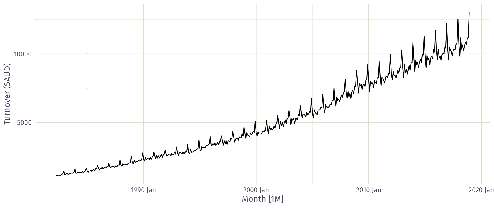
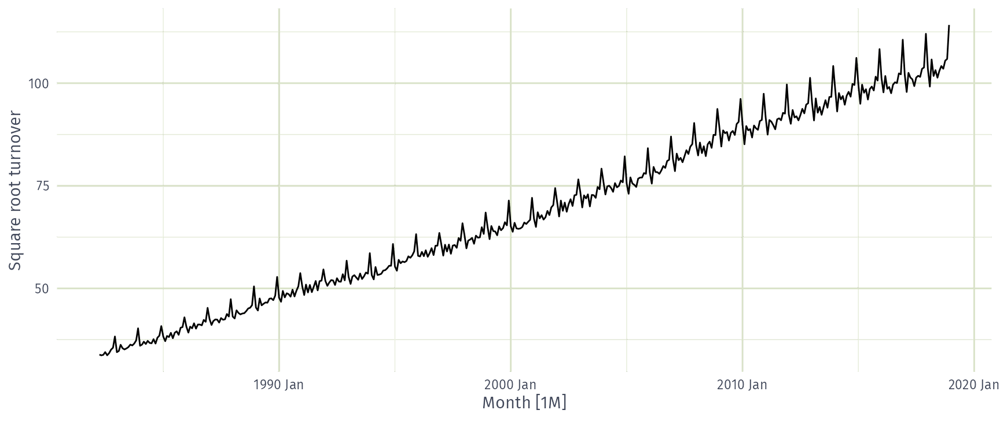
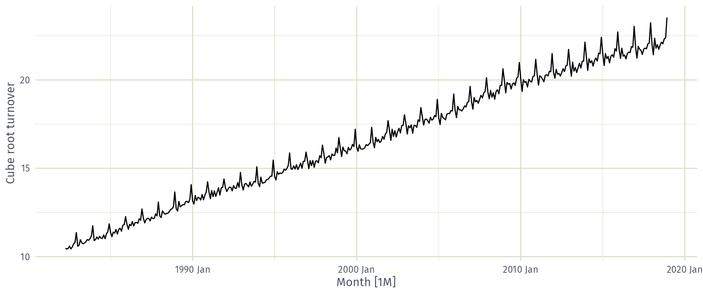
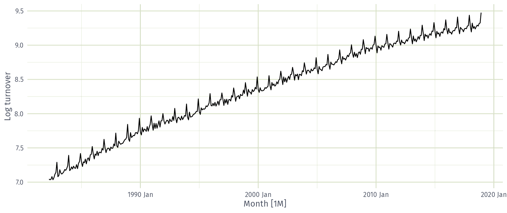
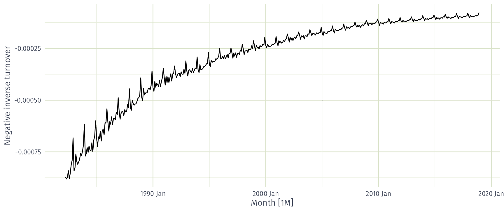
Which transformation best stabilises the variance of food turnover?
Each of these transformations is close to a member of the family of Box-Cox transformations: \[w_t = \left\{\begin{array}{ll} \text{log}(y_t), & \quad \lambda = 0; \\ (\text{sign}(y_t)|y_t|^\lambda-1)/\lambda , & \quad \lambda \ne 0. \end{array}\right. \]
What is the best value of λ for food retailing turnover?
Scale: 0–0.1 · 0.1–0.2 · 0.2–0.3 · 0.3–0.4 · 0.4–0.5 · 0.5–0.6 · 0.6–0.7 · 0.7–0.8 · 0.8–0.9 · 0.9–1.0
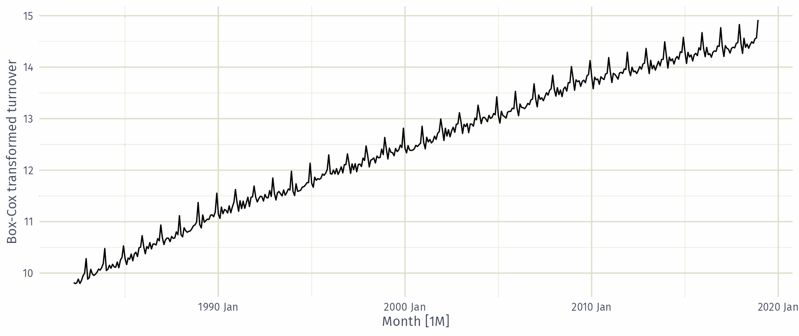
log1p() can also be useful for data with zeros.fable.)Besides transformations, what adjustments could make a time series easier to forecast?
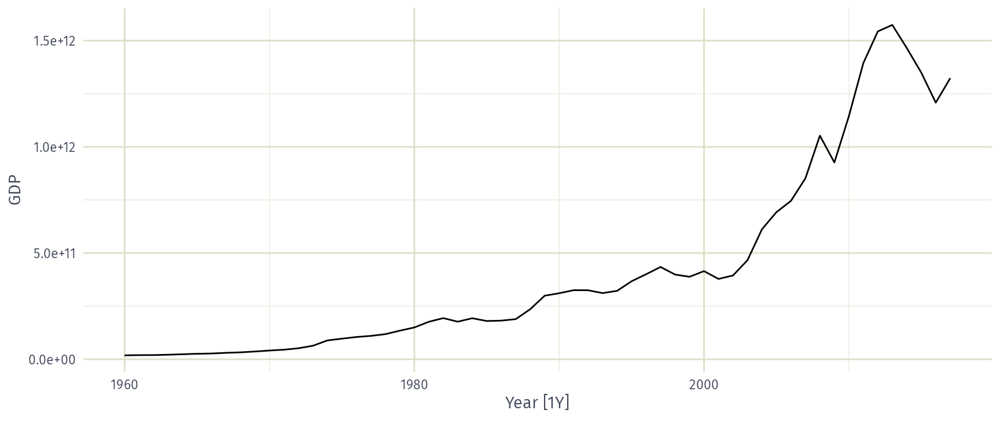
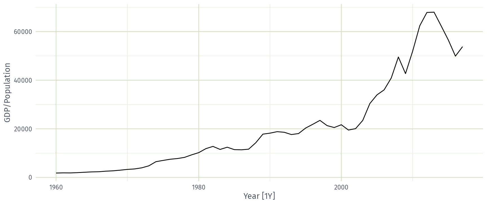
print_retail <- aus_retail |>
filter(Industry == "Newspaper and book retailing") |>
group_by(Industry) |>
index_by(Year = year(Month)) |>
summarise(Turnover = sum(Turnover))
aus_economy <- filter(global_economy, Country == "Australia")
print_retail |>
left_join(aus_economy, by = "Year") |>
mutate(Adj_turnover = Turnover / CPI) |>
pivot_longer(c(Turnover, Adj_turnover),
names_to = "Type", values_to = "Turnover"
) |>
ggplot(aes(x = Year, y = Turnover)) +
geom_line() +
facet_grid(vars(Type), scales = "free_y") +
labs(x = "Years", y = NULL,
title = "Turnover: Australian print media industry")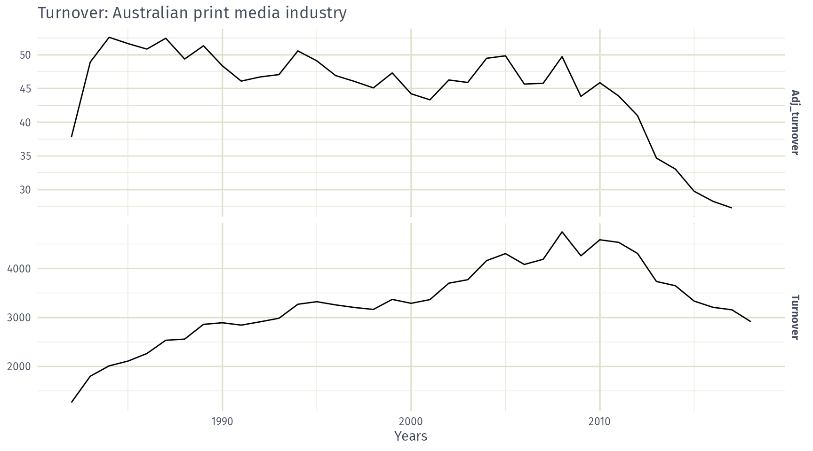
Additive decomposition
\[ y_t = S_t + T_t + R_t \]
\[\begin{aligned} \text{where}\quad & y_t = \text{ data at period } t \\ & T_t = \text{ trend-cycle component at period } t \\ & S_t = \text{ seasonal component at period } t \\ & R_t = \text{ remainder component at period } t \end{aligned}\]
# A tsibble: 357 x 3 [1M]
Month Title Employed
<mth> <chr> <dbl>
1 1990 Jan Retail Trade 13256.
2 1990 Feb Retail Trade 12966.
3 1990 Mar Retail Trade 12938.
4 1990 Apr Retail Trade 13012.
5 1990 May Retail Trade 13108.
6 1990 Jun Retail Trade 13183.
7 1990 Jul Retail Trade 13170.
8 1990 Aug Retail Trade 13160.
9 1990 Sep Retail Trade 13113.
10 1990 Oct Retail Trade 13185.
# ℹ 347 more rows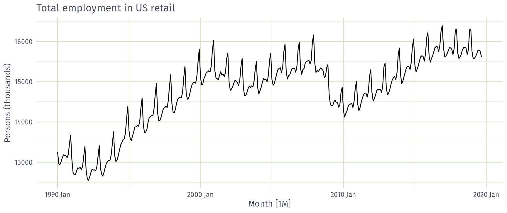
# A dable: 357 x 7 [1M]
# Key: .model [1]
# : Employed = trend + season_year + remainder
.model Month Employed trend season_year remainder season_adjust
<chr> <mth> <dbl> <dbl> <dbl> <dbl> <dbl>
1 stl 1990 Jan 13256. 13288. -33.0 0.836 13289.
2 stl 1990 Feb 12966. 13269. -258. -44.6 13224.
3 stl 1990 Mar 12938. 13250. -290. -22.1 13228.
4 stl 1990 Apr 13012. 13231. -220. 1.05 13232.
5 stl 1990 May 13108. 13211. -114. 11.3 13223.
6 stl 1990 Jun 13183. 13192. -24.3 15.5 13207.
7 stl 1990 Jul 13170. 13172. -23.2 21.6 13193.
8 stl 1990 Aug 13160. 13151. -9.52 17.8 13169.
9 stl 1990 Sep 13113. 13131. -39.5 22.0 13153.
10 stl 1990 Oct 13185. 13110. 61.6 13.2 13124.
# ℹ 347 more rows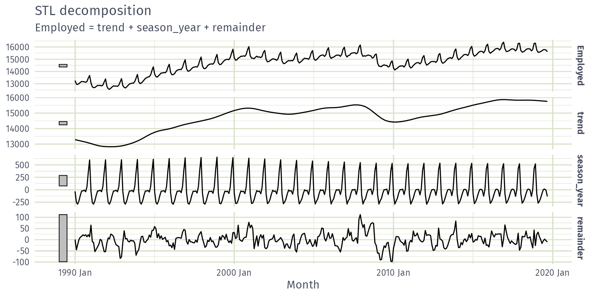
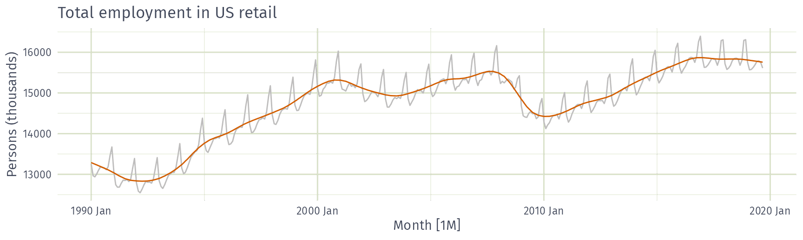
In which month does US retail employment peak?
How is the December peak in US retail employment changing over time?
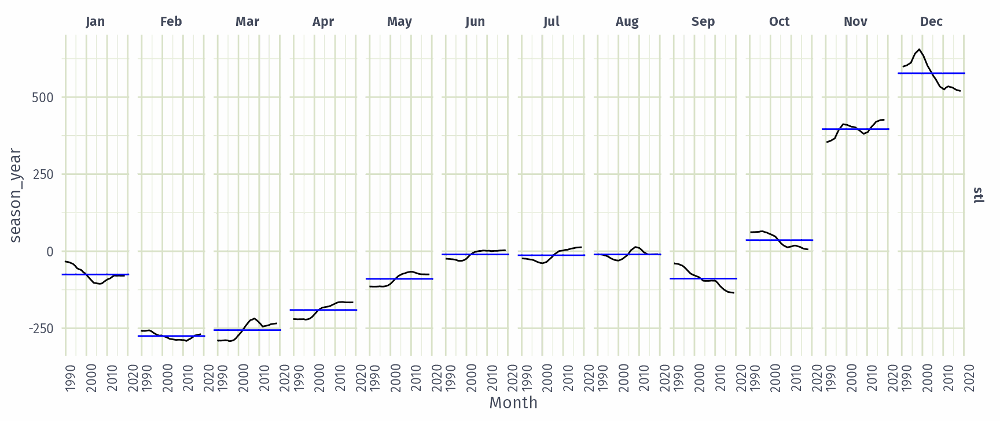
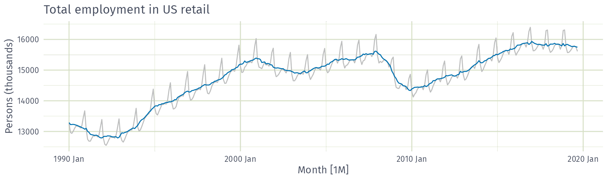
trend(window = ?) controls wiggliness of trend component.season(window = ?) controls variation on seasonal component.season(window = 'periodic') is equivalent to an infinite window.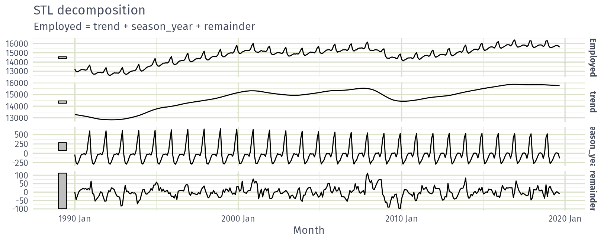
STL() chooses season(window=13) by defaultwindow = 13window = nextodd(ceiling((1.5*period)/(1-(1.5/s.window))))window values should be odd numbers for symmetry.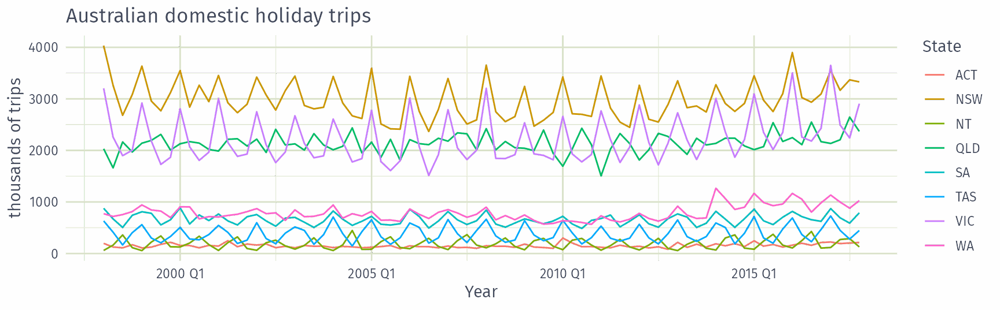
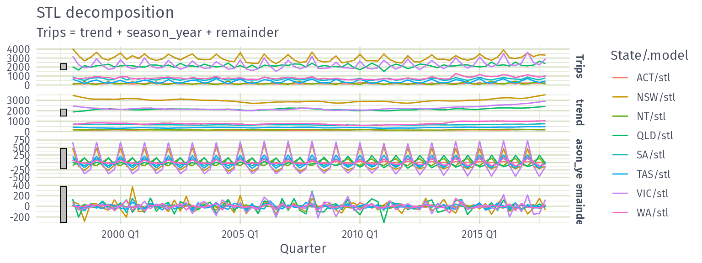
# A dable: 640 x 8 [1Q]
# Key: State, .model [8]
# : Trips = trend + season_year + remainder
State .model Quarter Trips trend season_year remainder season_adjust
<chr> <chr> <qtr> <dbl> <dbl> <dbl> <dbl> <dbl>
1 ACT stl 1998 Q1 196. 172. -8.48 32.6 205.
2 ACT stl 1998 Q2 127. 157. 10.3 -40.6 116.
3 ACT stl 1998 Q3 111. 142. -16.8 -14.5 128.
4 ACT stl 1998 Q4 170. 130. 14.6 25.6 156.
5 ACT stl 1999 Q1 108. 135. -8.63 -18.3 116.
6 ACT stl 1999 Q2 125. 148. 11.0 -34.6 114.
7 ACT stl 1999 Q3 178. 166. -16.0 28.3 194.
8 ACT stl 1999 Q4 218. 177. 13.2 27.5 204.
9 ACT stl 2000 Q1 158. 169. -8.75 -1.96 167.
10 ACT stl 2000 Q2 155. 151. 11.7 -8.20 143.
# ℹ 630 more rows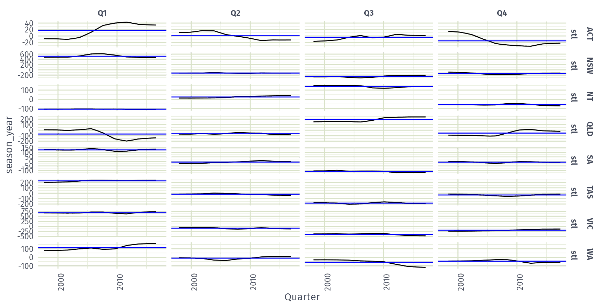
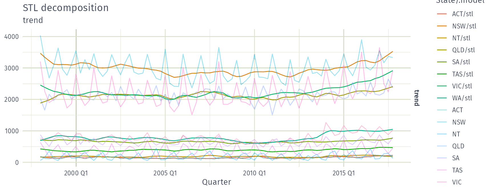
STL decomposition
\(y_t = T_t+S_t+R_t\)
\[\max\left(0, 1-\frac{\text{Var}(R_t)}{\text{Var}(S_t+R_t)}\right)\]
\[\max\left(0, 1-\frac{\text{Var}(R_t)}{\text{Var}(T_t+R_t)}\right)\]
Both range from 0 (none) to 1 (strong), computed by feat_stl().
tourism: quarterly overnight trips (thousands) for 304 Australian domestic series, keyed by Region, State and Purpose.
# A tibble: 304 × 12
Region State Purpose trend_strength seasonal_strength_year seasonal_peak_year
<chr> <chr> <chr> <dbl> <dbl> <dbl>
1 Adelaide SA Busine… 0.464 0.407 3
2 Adelaide SA Holiday 0.554 0.619 1
3 Adelaide SA Other 0.746 0.202 2
4 Adelaide SA Visiti… 0.435 0.452 1
5 Adelaide Hills SA Busine… 0.464 0.179 3
6 Adelaide Hills SA Holiday 0.528 0.296 2
7 Adelaide Hills SA Other 0.593 0.404 2
8 Adelaide Hills SA Visiti… 0.488 0.254 0
9 Alice Springs NT Busine… 0.534 0.251 0
10 Alice Springs NT Holiday 0.381 0.832 3
# ℹ 294 more rows
# ℹ 6 more variables: seasonal_trough_year <dbl>, spikiness <dbl>, linearity <dbl>,
# curvature <dbl>, stl_e_acf1 <dbl>, stl_e_acf10 <dbl>trend_strength, seasonal_strength_year: strength of the trend and seasonal components.seasonal_peak_year, seasonal_trough_year: the quarter with the largest and smallest seasonal component.spikiness: prevalence of spikes in the remainder.linearity, curvature: shape of the trend, from a quadratic regression on time.stl_e_acf1: first autocorrelation of the remainder.stl_e_acf10: sum of squares of the first ten autocorrelations of the remainder.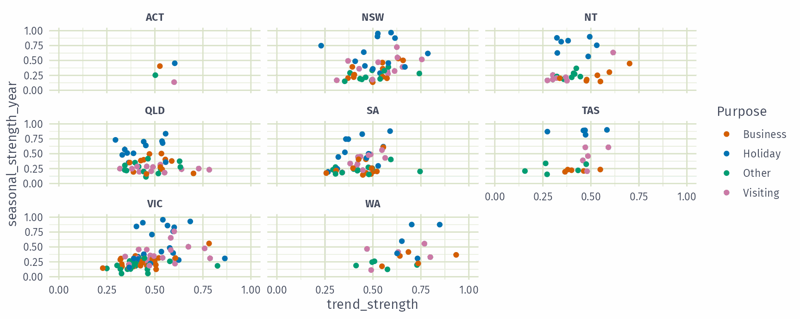
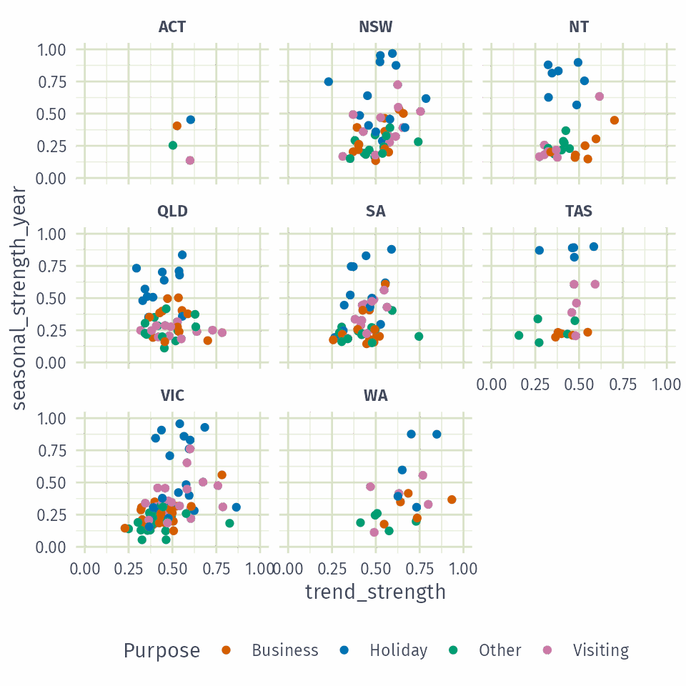
Which travel purpose is most seasonal?
# A tibble: 304 × 10
Region State Purpose acf1 acf10 diff1_acf1 diff1_acf10 diff2_acf1 diff2_acf10
<chr> <chr> <chr> <dbl> <dbl> <dbl> <dbl> <dbl> <dbl>
1 Adelaide SA Busine… 0.0333 0.131 -0.520 0.463 -0.676 0.741
2 Adelaide SA Holiday 0.0456 0.372 -0.343 0.614 -0.487 0.558
3 Adelaide SA Other 0.517 1.15 -0.409 0.383 -0.675 0.792
4 Adelaide SA Visiti… 0.0684 0.294 -0.394 0.452 -0.518 0.447
5 Adelaide … SA Busine… 0.0709 0.134 -0.580 0.415 -0.750 0.746
6 Adelaide … SA Holiday 0.131 0.313 -0.536 0.500 -0.716 0.906
7 Adelaide … SA Other 0.261 0.330 -0.253 0.317 -0.457 0.392
8 Adelaide … SA Visiti… 0.139 0.117 -0.472 0.239 -0.626 0.408
9 Alice Spr… NT Busine… 0.217 0.367 -0.500 0.381 -0.658 0.587
10 Alice Spr… NT Holiday -0.00660 2.11 -0.153 2.11 -0.274 1.55
# ℹ 294 more rows
# ℹ 1 more variable: season_acf1 <dbl>acf1: first autocorrelation of the series.acf10: sum of squares of the first ten autocorrelations.diff1_acf1, diff1_acf10: the same, for the differenced series.diff2_acf1, diff2_acf10: the same, for the twice differenced series.season_acf1: autocorrelation at the first seasonal lag.All features from the feasts package:
# A tibble: 304 × 51
Region State Purpose trend_strength seasonal_strength_year seasonal_peak_year
<chr> <chr> <chr> <dbl> <dbl> <dbl>
1 Adelaide SA Busine… 0.464 0.407 3
2 Adelaide SA Holiday 0.554 0.619 1
3 Adelaide SA Other 0.746 0.202 2
4 Adelaide SA Visiti… 0.435 0.452 1
5 Adelaide Hills SA Busine… 0.464 0.179 3
6 Adelaide Hills SA Holiday 0.528 0.296 2
7 Adelaide Hills SA Other 0.593 0.404 2
8 Adelaide Hills SA Visiti… 0.488 0.254 0
9 Alice Springs NT Busine… 0.534 0.251 0
10 Alice Springs NT Holiday 0.381 0.832 3
# ℹ 294 more rows
# ℹ 45 more variables: seasonal_trough_year <dbl>, spikiness <dbl>, linearity <dbl>,
# curvature <dbl>, stl_e_acf1 <dbl>, stl_e_acf10 <dbl>, acf1 <dbl>, acf10 <dbl>,
# diff1_acf1 <dbl>, diff1_acf10 <dbl>, diff2_acf1 <dbl>, diff2_acf10 <dbl>,
# season_acf1 <dbl>, pacf5 <dbl>, diff1_pacf5 <dbl>, diff2_pacf5 <dbl>,
# season_pacf <dbl>, zero_run_mean <dbl>, nonzero_squared_cv <dbl>,
# zero_start_prop <dbl>, zero_end_prop <dbl>, lambda_guerrero <dbl>, …Principal components are combinations of the 48 features with the most variation, so the 304 series can be compared in two dimensions:
# A tibble: 304 × 5
Region State Purpose .fittedPC1 .fittedPC2
<chr> <chr> <chr> <dbl> <dbl>
1 Adelaide SA Business -0.868 1.25
2 Adelaide SA Holiday 1.00 1.26
3 Adelaide SA Other 4.90 -6.11
4 Adelaide SA Visiting 0.306 1.48
5 Adelaide Hills SA Business -5.00 -0.526
6 Adelaide Hills SA Holiday -0.628 -1.42
7 Adelaide Hills SA Other -0.256 -2.92
8 Adelaide Hills SA Visiting -1.80 -2.18
9 Alice Springs NT Business 1.07 -2.56
10 Alice Springs NT Holiday 4.36 7.31
# ℹ 294 more rowsHoliday series sit higher on both PCs than other travel purposes.
Four outlying series: PC1 > 12, or PC1 > 10 and PC2 > 0.
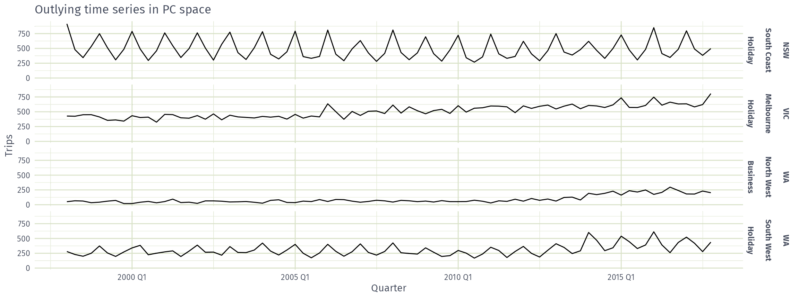